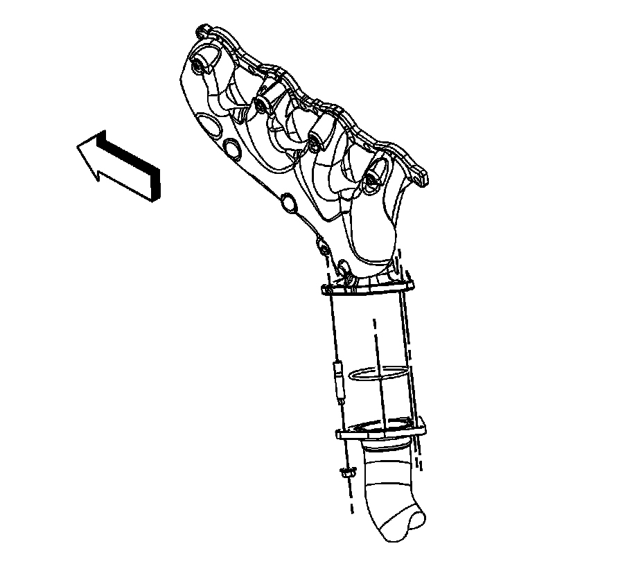

Exhaust Manifold Replacement - Left Side
Exhaust Manifold Replacement - Left Side
Removal Procedure

1. Remove the ignition coils. Refer to Ignition Coil Replacement.
2. Remove the spark plugs. Refer to Spark Plug Replacement.
3. Raise and support the vehicle. Refer to Lifting and Jacking the Vehicle.
4. Remove the catalytic converter to exhaust manifold nuts. (1500 series shown, 2500 series similar).
5. Lower the vehicle.

6. Remove the exhaust manifold bolts, and exhaust manifold.
7. Remove and discard the exhaust manifold gasket.
Installation Procedure
Important:
^ Tighten the exhaust manifold bolts as specified in the service procedure. Improperly installed and/or leaking exhaust manifold gaskets may affect vehicle emissions and/or On-Board Diagnostic (OBD) II system performance.
^ The cylinder head exhaust manifold bolt hole threads must be clean and free of debris or threadlocking material.
^ Do not apply sealant to the first 3 threads of the bolt.
1. Apply a 5 mm (0.2 in) wide band of threadlock GM P/N 12345493 (Canadian P/N 10953488), or equivalent to the threads of the exhaust manifold bolts.
2. Position the NEW exhaust manifold gasket and exhaust manifold to the cylinder head.
Notice: Refer to Fastener Notice.
3. Install the exhaust manifold bolts.
1. Tighten the bolts a first pass to 15 N.m (11 lb ft).
Tighten the exhaust manifold bolts beginning with the center 2 bolts. Alternate from side-to-side, and work toward the outside bolts.
2. Tighten the bolts a final pass to 20 N.m (15 lb ft).
Tighten the exhaust manifold bolts beginning with the center 2 bolts. Alternate from side-to-side, and work toward the outside bolts.
4. Using a flat punch, bend the gasket tab at the rear of the gasket around the cylinder head edge.
5. Raise the vehicle.
6. Ensure that the exhaust seal is seated in the catalytic converter.
7. Install the catalytic converter to exhaust manifold nuts. (1500 series shown, 2500 series similar).
Tighten the nuts to 50 N.m (37 lb ft).
8. Lower the vehicle.
9. Install the spark plugs. Refer to Spark Plug Replacement.
10. Install the ignition coils. Refer to Ignition Coil Replacement.